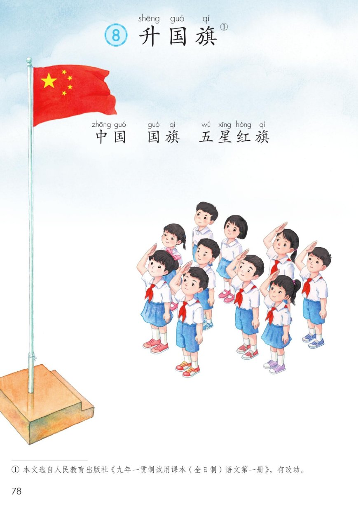
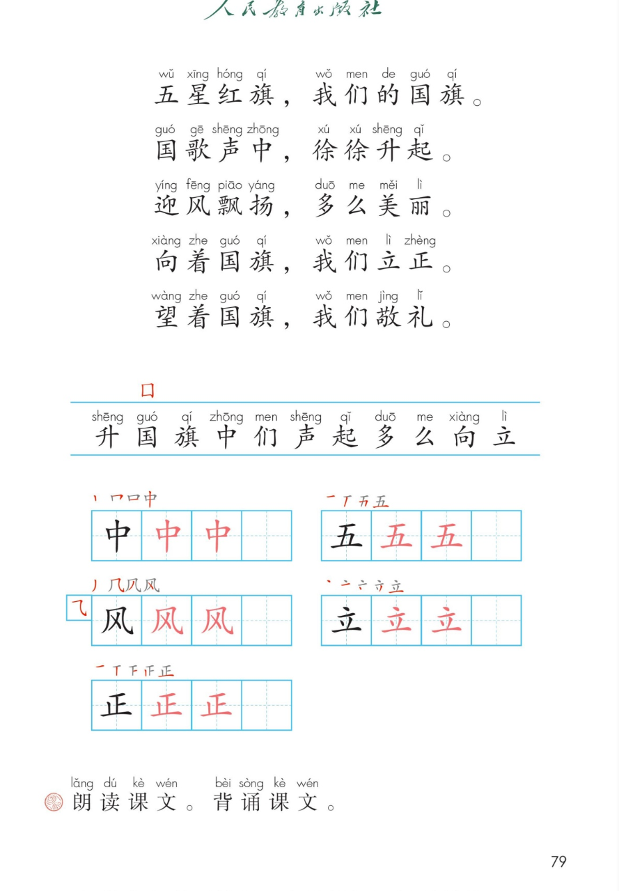

×
🔊 手机听不到声音怎么办？
① 先把手机
媒体音量调大 ，确认没开静音、没连蓝牙耳机；在微信里打开的，点右上角「⋯ → 用浏览器打开」。
② 还是没声音？到应用商店免费下载
Microsoft Edge 浏览器 （它自带朗读发声），用它打开本页面就能出声。
③ 换了 Edge 仍然没声音，说明这部手机的
硬件/系统不支持 网页朗读（多为老旧机型）；近几年买的新手机一般都能正常播放。
→ 打开声音自检
统编版 · 一年级上册 · 第六单元 · 识字 · 识字8
⑧ 升国旗
五星红旗，我们的国旗。国歌声中，徐徐升起。
朗读背诵 词语递进 升旗礼仪 闯关 8 题
这一课学什么： 认识中国、国旗、五星红旗 ；朗读、背诵课文；
认识 11 个字，写好「中、五、风、立、正」；学会升国旗时立正、敬礼 。🇨🇳
课本第 78 页 点卡听读
词语小发现： 中国 → 国旗 → 五星红旗 ，一个比一个具体。
五星红旗：红色旗面，左上角一颗大星＋四颗小星 。⭐
课本第 79 页 点一行读一行
读前小贴士： 课文按升旗的顺序 写：国旗是什么 → 慢慢升起 → 迎风飘扬 → 我们立正敬礼。
读的时候站直、有精神 。🫡
🎵 全文连读
🔁 跟读模式（读完一句停一停）
课本第 79 页识字条 点一张读一张
识字条 · 连起来读
升 国 旗 中 们 声 起 多 么 向 立 —— 「囗 」国字框把国围起来
课本第 79 页 点卡听读
课本第 79 页田字格 先看笔顺，再动笔
课本第 79 页 点卡片听读
课本原句： 「向着国旗，我们立正。望着国旗，我们敬礼。 」站直、安静、眼睛望着国旗 ，少先队员行队礼，一起唱国歌。🎵
课后题： 朗读课文。背诵课文。💡 按「是什么 → 怎么升 → 什么样 → 我们怎么做 」
四步来记，很快就会背。📖
点题目可以听题，点选项就判对错，答完自动算分
已经答 0 题，答对 0 题。
点图放大

第 78 页 · 课题 · 中国 国旗 五星红旗 · 脚注

第 79 页 · 课文 · 识字条 · 田字格 · 课后题